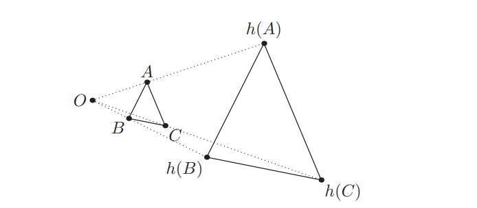

Урт ба Харьцаа (6/02)
Синусын Өргөтгөсөн Теорем
Теорем
\(\triangle ABC\) гурвалжныг багтаасан тойргийн радиус нь \(R\) байг. Тэгвэл дараах харьцаа биелнэ:
\[ \frac{a}{\sin A} = \frac{b}{\sin B} = \frac{c}{\sin C} = 2R. \]
Дасгал (Биссектрисийн Чанар)
\(\triangle ABC\) гурвалжинд \(D\) нь \(BC\) тал дээр орших цэг бөгөөд \(AD\) нь \(\angle BAC\) өнцгийг тэнцүү хувааж байг. Тэгвэл дараах харьцаа биелнэ:
\[ \frac{AB}{AC} = \frac{DB}{DC}. \]
Чевийн Теорем (Ceva’s Theorem)
Чевиан (cevian) гэдэг нь гурвалжны нэг оройг эсрэг талын ямар нэгэн цэгтэй холбосон хэрчим юм. Үүнээс үүдэх нэгэн асуулт бол гурвалжны гурван чевиан хэрчим хэзээ нэг цэгт огтлолцдог вэ гэсэн асуулт юм. Үүний хариуг Чевийн теорем өгдөг.
Теорем
\(\triangle ABC\) гурвалжинд \(AX\), \(BY\), \(CZ\) нь чевианууд байг. Эдгээр нь нэг цэгт огтлолцох гарцаагүй бөгөөд хүрэлцээтэй нөхцөл нь:
\[ \frac{BX}{XC} \cdot \frac{CY}{YA} \cdot \frac{AZ}{ZB} = 1. \]
Теорем (Чевийн теоремийн тригонометр хэлбэр)
\(\triangle ABC\) гурвалжинд \(AX\), \(BY\), \(CZ\) нь чевианууд байг. Эдгээр нь нэг цэгт огтлолцох гарцаагүй бөгөөд хүрэлцээтэй нөхцөл нь:
\[ \frac{\sin \angle BAX \cdot \sin \angle CBY \cdot \sin \angle ACZ}{\sin \angle XAC \cdot \sin \angle YBA \cdot \sin \angle ZCB} = 1. \]
Дасгал
Чевийн теоремийн тригонометр хэлбэрийг батал.
Менелайн Теорем (Menelaus’s Theorem)
Теорем
\(\triangle ABC\) гурвалжинд \(X\), \(Y\), \(Z\) нь тус тус \(BC\), \(CA\), \(AB\) шулуунууд дээр орших, оройноос ялгаатай цэгүүд байг. Тэгвэл \(X\), \(Y\), \(Z\) цэгүүд нэг шулуун дээр орших гарцаагүй бөгөөд хүрэлцээтэй нөхцөл нь:
\[ \frac{BX}{XC} \cdot \frac{CY}{YA} \cdot \frac{AZ}{ZB} = 1 \]
Гомотети ба Есөн Цэгийн Тойрог
Тодорхойлолт
Гомотети \(h\) гэдэг нь \(O\) төв ба бодит тоо \(k\)-гээр өгөгдсөн хувиргалт юм. Энэ нь дурын \(P\) цэгийг \(h(P)\) цэг рүү хувиргах бөгөөд \(O\)-с \(P\) хүртэлх зайг \(k\) дахин үржүүлдэг.

Лемма (Гомотет Гурвалжнууд)
\(ABC\) ба \(XYZ\) нь тэнцүү биш хоёр гурвалжин байг. Хэрэв \(AB \parallel XY\), \(BC \parallel YZ\), \(CA \parallel ZX\) байвал \(AX\), \(BY\), \(CZ\) шулуунууд нэг цэг \(O\) дээр огтлолцоно. Энэ \(O\) нь \(ABC\) гурвалжнийг \(XYZ\) гурвалжин руу гомотети хийх төв цэг байна.
Гомотетийн нэг алдартай хэрэглээ бол “есөн цэгийн тойрог” гэж нэрлэгддэг теорем юм.
Лемма (Есөн Цэгийн Тойрог)
\(\triangle ABC\) гурвалжинг авч үзье. Түүний багтаасан тойргийн төвийг \(O\), ортотөвийг \(H\) гэж тэмдэглэе. \(OH\) хэрчмийн дундаж цэгийг \(N_9\) гэе. Тэгвэл \(AB\), \(BC\), \(CA\) талуудын дундаж цэгүүд, \(AH\), \(BH\), \(CH\) өндрүүдийн дундаж цэгүүд, мөн \(\triangle ABC\)-ийн өндрүүдийн сууриуд нь бүгд \(N_9\) төвтэй тойрог дээр оршино. Үүнээс гадна уг тойргийн радиус нь \((ABC)\) тойргийн радиусын тэн хагас байна.
Дасгал (Эйлерын шулуун)
\(\triangle ABC\) гурвалжинд \(O\), \(G\), \(H\) нь тус тус багтаасан тойргийн төв, хүндийн төв, ортотөв байг. Тэгвэл эдгээр \(O\), \(G\), \(H\) цэгүүд нь нэг шулуун дээр оршино. Мөн \(G\) нь \(OH\) хэрчмийг \(2{:}1\) харьцаагаар хуваана гэж батал.
Жишээ Бодлогууд
Бодлого 1 (EGMO 2012/7)
Хурц өнцөгт \(\triangle ABC\) гурвалжинг авч үзье. Түүний багтаасан тойргийг \(\omega\), ортотөвийг \(H\) гэж тэмдэглэе. \(K\) нь \(\omega\) тойргийн \(A\)-г агуулаагүй \(BC\) нум дээрх цэг байг. \(L\) нь \(K\)-г \(AB\) шулуунд тэгш хэмтэй, \(M\) нь \(K\)-г \(BC\) шулуунд тэгш хэмтэй хувиргасан цэгүүд байг. \(E\) нь \(\omega\) ба \(\triangle BLM\) гурвалжны багтаасан тойргийн хоёр дахь огтлолцлын цэг байг. Тэгвэл \(KH\), \(EM\), \(BC\) шулуунууд нэг цэгт огтлолцохыг батал.
\(H\) цэгийг \(BC\) ба \(BA\) талуудад тэгш хэмтэй хувиргасан цэгүүдийг \(H_A\), \(H_C\) гэж нэрлэе. Эдгээр нь \((ABC)\) тойрог дээр орших ба \(H_AM\) шулуун нь тойргийг \(E'\) цэгт дахин огтолно. Байгуулалтын дагуу \(E'M\) ба \(HK\) шулуунууд нь \(BC\) дээр огтлолцоно. Эхлээд \(L\), \(H_C\), \(E'\) нь нэг шулуун дээр оршихыг батлая. Тэгш хэмийн дагуу дараах тэнцэтгэлүүд биелнэ:
\[ \angle LH_CB = -\angle KHB = \angle MH_AB, \]
мөн
\[ \angle MH_AB = \angle E'H_AB = \angle E'H_CB, \]
гэсэн тэнцэтгэлүүдээс \(L\), \(H_C\), \(E'\) нь нэг шулуун дээр орших нь батлагдав.
Цааш нь:
\[ \angle LE'M = \angle H_CE'H_A = \angle H_CBH_A = 2\angle ABC, \]
мөн
\[ \angle LBM = \angle LBK + \angle KBM = 2\angle ABK + 2\angle KBC = 2\angle ABC, \]
болох тул \(B\), \(L\), \(E'\), \(M\) нь нэг тойрог дээр оршино. Иймээс \(E = E'\) бөгөөд батлах зүйл дуусав.
Бодлого 2 (Shortlist 2000/G3)
Хурц өнцөгт \(\triangle ABC\) гурвалжны багтаасан тойргийн төвийг \(O\), ортотөвийг \(H\) гэж тэмдэглэе. \(BC\), \(CA\), \(AB\) талууд дээр тус тус \(D\), \(E\), \(F\) цэгүүдийг дараах нөхцөлүүд биелдэг байхаар авч болно гэж батал:
\[ OD + DH = OE + EH = OF + FH, \]
мөн шулуунууд \(AD\), \(BE\), \(CF\) нь нэг цэгт огтлолцоно.
\(H\)-г \(BC\), \(CA\), \(AB\) талуудад тэгш хэмтэй хувиргасан цэгүүдийг \(H_A\), \(H_B\), \(H_C\) гэж тэмдэглэе. \(D\)-г \(OH_A\) ба \(BC\)-ийн огтлолын цэг гэе. \(OD + DH = OD + DH_A\) нь \((ABC)\) тойргийн радиустай тэнцүү. Үүний нэгэн адил \(E\), \(F\) цэгүүдийг тодорхойловол дараах тэнцэтгэлүүд биелнэ:
\[ OD + DH = OE + EH = OF + FH. \]
Одоо \(AD\), \(BE\), \(CF\) шулуунууд нэг цэгт огтлолцохыг харуулъя. \(R\)-г \(\triangle ABC\)-ийн багтаасан тойргийн радиус гэж тэмдэглэе. \(\triangle OBD\) гурвалжинд синусын теорем хэрэглэвэл:
\[ \frac{BD}{R} = \frac{\sin \angle BOD}{\sin \angle BDO} = \frac{\sin 2\angle BAH_A}{\sin \angle BDO} = \frac{\sin 2B}{\sin \angle BDO}. \]
Үүнтэй адилаар:
\[ \frac{CD}{R} = \frac{\sin 2C}{\sin \angle CDO}. \]
Эдгээрийг хуваавал:
\[ \frac{BD}{CD} = \frac{\sin 2B}{\sin 2C}. \]
Үүнээс:
\[ \frac{BD}{CD} \cdot \frac{CE}{EA} \cdot \frac{BF}{FA} = 1, \]
гэж гарч ирнэ. Иймээс Чевийн теоремын дагуу \(AD\), \(BE\), \(CF\) нь нэг цэгт огтлолцоно.
Бодлогууд
Бодлого 1
\(\triangle ABC\) гурвалжны багтсан тойрог \(BC\), \(CA\), \(AB\) талуудыг тус тус \(D\), \(E\), \(F\) цэгүүдэд шүргэж байг — эдгээр гурван цэгээр үүсэх \(\triangle DEF\)-г \(\triangle ABC\)-ийн контакт гурвалжин гэнэ. Тэгвэл шулуунууд \(AD\), \(BE\), \(CF\) нь нэг цэгт огтлолцоно гэж батал. Энэ огтлолцлын цэгийг \(\triangle ABC\) гурвалжны Гергонны цэг гэнэ.
Бодлого 2
Тойрогт багтсан дөрвөн өнцөгт \(ABCD\)-д \(X\), \(Y\) нь тус тус \(\triangle ABC\) ба \(\triangle BCD\) гурвалжны ортотөвүүд байг. Тэгвэл \(AXYD\) нь параллелограмм болохыг батал.
Бодлого 3
\(\triangle ABC\) гурвалжинд \(AD\), \(BE\), \(CF\) нь \(P\) цэгт огтлолцох чевианууд байг. Тэгвэл дараах харьцаа биелэхийг батал:
\[ \frac{PD}{AD} + \frac{PE}{BE} + \frac{PF}{CF} = 1. \]
Бодлого 4 (Shortlist 2006/G3)
\(ABCDE\) нь гүдгэр таван өнцөгт байг. Дараах өнцгүүд тэнцүү гэж өгөгджээ: \(\angle BAC = \angle CAD = \angle DAE\) ба \(\angle ABC = \angle ACD = \angle ADE\). Диагональ \(BD\) ба \(CE\) нь \(P\) цэгт огтлолцоно. Тэгвэл \(AP\) цацраг нь \(CD\) хэрчмийг тэнцүү хэсэгт хуваахыг батал.
Бодлого 5 (BAMO 2013/3)
Хурц өнцөгт \(\triangle ABC\) гурвалжны ортотөвийг \(H\) гэе. \(\triangle ABH\), \(\triangle BCH\), \(\triangle CAH\) гурвалжнуудын багтаасан тойргийн төвүүдийг авч үзье. Тэгвэл эдгээр гурван багтаасан тойргийн төв нь \(\triangle ABC\) гурвалжинтай тэнцүү гурвалжин үүсгэхийг батал.
Бодлого 6 (USAMO 2003/4)
\(\triangle ABC\) гурвалжинд \(A\) ба \(B\) цэгүүдээр дайрч буй нэг тойрог \(AC\), \(BC\) хэрчмүүдийг тус тус \(D\), \(E\) цэгүүдэд огтолно. \(AB\) ба \(DE\) шулуунууд нь \(F\) цэгт огтлолцож, \(BD\) ба \(CF\) шулуунууд \(M\) цэгт огтлолцоно. Тэгвэл \(MF = MC\) байх гарцаагүй бөгөөд хүрэлцээтэй нөхцөл нь дараах гэж батал:
\[ MB \cdot MD = MC^2. \]
Бодлого 7 (Monge’s Theorem)
Хавтгайд орших үл огтлолцох мөн аль ч хоёр нь тэнцүү биш \(\omega_1\), \(\omega_2\), \(\omega_3\) тойргуудыг авч үзье. Тойрог бүрийн хувьд, хос хосоор нь ерөнхий гадаад шүргэгч шулуунуудыг байгуулж, тэдгээрийн огтлолцлын цэгүүдийг авъя. Тэгвэл эдгээр гурван огтлолцлын цэг нь нэг шулуун дээр оршихыг батал.
Бодлого 8 (Cevian Nest Theorem)
\(\triangle ABC\) гурвалжинд \(AX\), \(BY\), \(CZ\) нь нэг цэгт огтлолцдог чевианууд байг. Мөн \(\triangle XYZ\) гурвалжинд \(XD\), \(YE\), \(ZF\) нь нэг цэгт огтлолцдог чевианууд гэж үзье. Тэгвэл цацрагууд \(AD\), \(BE\), \(CF\) нь нэг цэгт огтлолцохыг батал.
Бодлого 9
Хурц өнцөгт \(\triangle ABC\) гурвалжинд \(X\) нь \((ABC)\) багтаасан тойрог дээр орших \(A\)-аас өөр цэг ба \(AX \parallel BC\) гэж өгөгдсөн. \(G\)-г \(\triangle ABC\) гурвалжны хүндийн төв, \(K\)-г \(A\) оройгоос \(BC\) талд буулгасан өндөрийн суурь гэж тэмдэглэе. Тэгвэл \(K\), \(G\), \(X\) цэгүүд нь нэг шулуун дээр оршихыг батал.
Бодлого 10 (USAMO 1993/2)
\(ABCD\) нь дөрвөн өнцөгт байг. Түүний диагональ \(AC\) ба \(BD\) нь перпендикуляр ба \(E\) цэгт огтлолцоно. \(E\) цэгийг \(AB\), \(BC\), \(CD\), \(DA\) тал бүрт тэгш хэмтэй хувиргасан цэгүүд нь нэг тойрог дээр оршихыг батал.
Бодлого 11 (EGMO 2013/1)
\(\triangle ABC\) гурвалжны \(BC\) талыг \(C\)-гээс цааш \(D\) хүртэл сунгасан ба \(CD = BC\) гэж өгөгджээ. Мөн \(CA\) талыг \(A\)-с цааш \(E\) хүртэл сунгасан ба \(AE = 2CA\) байна. Хэрэв \(AD = BE\) бол \(\triangle ABC\) нь тэгш өнцөгт гурвалжин болохыг батал.
Бодлого 12 (APMO 2004/2)
Хурц өнцөгт \(\triangle ABC\) гурвалжны багтаасан тойргийн төвийг \(O\), ортотөвийг \(H\) гэж тэмдэглэе. Тэгвэл \(\triangle AOH\), \(\triangle BOH\), болон \(\triangle COH\) гурвалжнуудын аль нэгний талбай нь үлдсэн хоёрынх нь нийлбэртэй тэнцүү гэж батал.
Бодлого 13 (Shortlist 2001/G1)
Хурц өнцөгт \(\triangle ABC\) гурвалжинд багтсан квадратын төвийг \(A_1\) гэж тэмдэглэе. Энэ квадратын хоёр орой нь \(BC\) тал дээр, үлдсэн хоёр орой нь \(AB\) ба \(AC\) тал дээр тус тус оршдог. Үүний нэгэн адил, \(AC\) тал дээр хоёр оройтой, үлдсэн оройнууд нь \(BC\), \(AB\) талууд дээр орших багтсан квадратын төвийг \(B_1\), мөн \(AB\) тал дээр хоёр оройтой багтсан квадратын төвийг \(C_1\) гэе. Тэгвэл \(AA_1\), \(BB_1\), \(CC_1\) шулуунууд нь нэг цэгт огтлолцохыг батал.
Бодлого 14 (USA TSTST 2011/4)
Хурц өнцөгт \(\triangle ABC\) нь \(\omega\) тойрогт багтсан байг. Ортотөвийг \(H\), багтаасан тойргийн төвийг \(O\) гэж тэмдэглэе. \(M\), \(N\) нь \(AB\), \(AC\) талуудын дундаж цэгүүд байг. Цацрагууд \(MH\), \(NH\) нь \(\omega\) тойргийг \(P\), \(Q\) цэгүүдэд огтолно. \(MN\) ба \(PQ\) шулуунууд \(R\) цэгт огтлолцоно. Тэгвэл \(OA \perp RA\) гэдгийг батал.
Бодлого 15 (USAMO 2015/2)
Дөрвөн өнцөгт \(APBQ\) нь \(\omega\) тойрогт багтсан байг. Өнцгүүд \(\angle P = \angle Q = 90^\circ\) бөгөөд \(AP = AQ < BP\) гэж өгөгджээ. \(X\) нь \(PQ\) хэрчмийн дээрх хувьсах цэг байг. \(AX\) шулуун нь \(\omega\) тойргийг \(A\)-аас өөр \(S\) цэгт дахин огтолно. \(T\) нь \(\omega\) тойргийн \(AQB\) нум дээр орших ба \(XT \perp AX\) байна. \(ST\) хөвчийн дундаж цэгийг \(M\) гэе. \(X\) цэг нь \(PQ\) хэрчмийг даган хөдлөх үед \(M\) цэгийн геометр байр нь тогтмол нэг тойрог болохыг батал.